绿角犀看图 · 25 个风格预设对比（输入图：sample-photo.png）
01 原图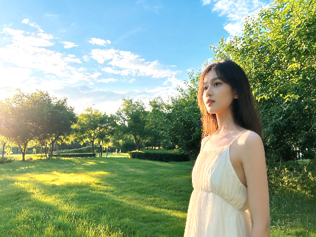
02 日系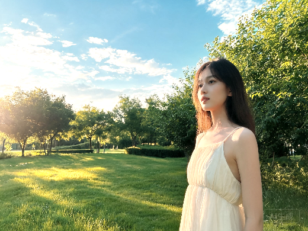
03 复古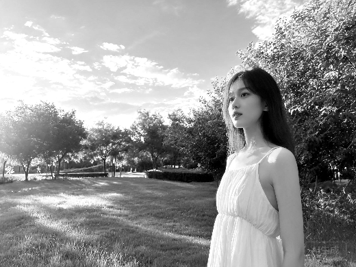
04 黑白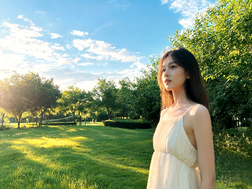
05 胶片06 LOMO07 清新08 冷调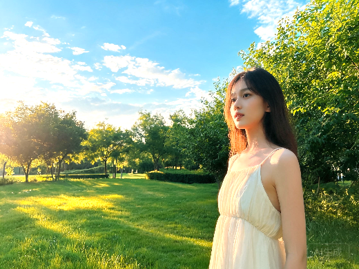
09 暖阳10 港风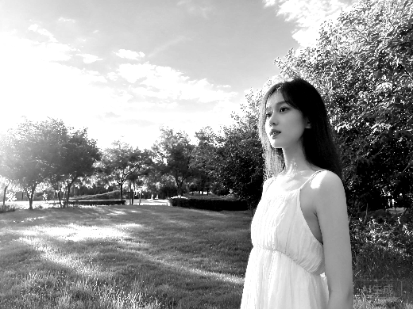
11 高对比黑白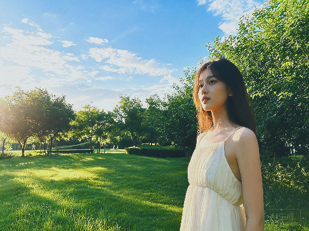
12 玄青·ME8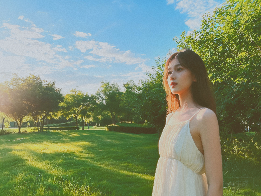
13 杂志人像·MN7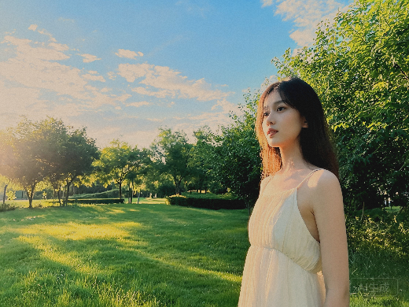
14 复古暗调·MZ5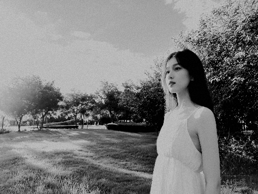
15 黑白质感·V2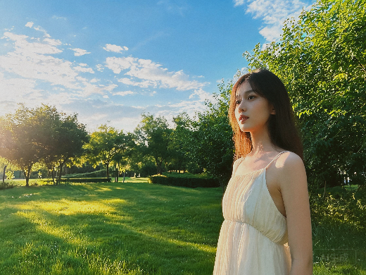
16 暗调棕青·TC817 暗调扫街·VN2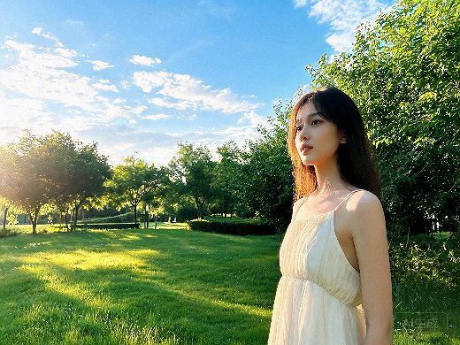
18 丧系扫街·VN419 低饱和·VN120 夜景质感·CN221 秋日电影·VM5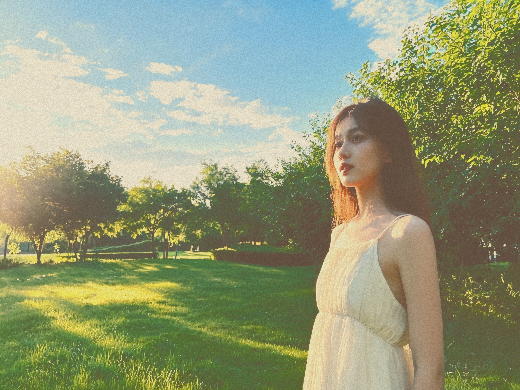
22 月升王国·VM1023 蓝橙胶卷·TC5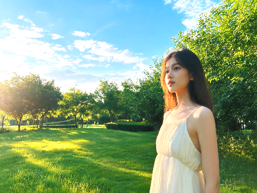
24 清新野餐25 氛围胶片·TC5